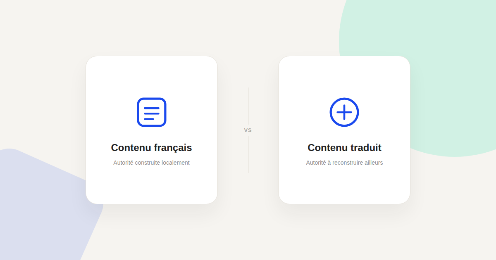
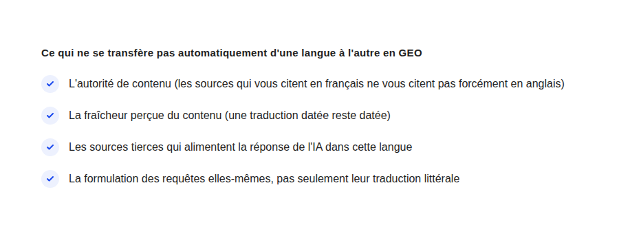

GEO multilingue : comment les IA génératives traitent votre marque dans une autre langue
« On est bien cités par ChatGPT en France, donc on devrait l'être partout » — c'est l'hypothèse la plus fréquente, et la plus fausse, quand une marque commence à s'intéresser au GEO à l'international.

La confusion la plus fréquente que j'observe sur le sujet : assimiler le GEO multilingue à une simple traduction de contenu déjà performant. Les moteurs génératifs (ChatGPT, Claude, Perplexity, Gemini) ne fonctionnent pas comme un plan SEO à hreflang où une même autorité de domaine profite à toutes les versions linguistiques — l'autorité perçue dans une langue ne se transfère pas mécaniquement à une autre.
Pourquoi l'autorité ne se transfère pas d'une langue à l'autre
Ces modèles construisent leurs réponses à partir d'un corpus de sources qui varie fortement selon la langue de la requête : une requête en anglais mobilise majoritairement des sources anglophones, une requête en français des sources francophones. Être une référence citée régulièrement en français ne garantit donc rien sur ce qui alimente une réponse en anglais ou en espagnol — c'est un écosystème de sources largement distinct, pas une continuité automatique.
Ce que ça change concrètement pour une stratégie GEO internationale
La traduction seule ne construit pas d'autorité
Traduire un article qui performe bien en français ne le fait pas automatiquement citer en anglais. Ce qui construit la citation, c'est la présence répétée de ce contenu — ou de contenus qui en reprennent les idées — dans l'écosystème de sources que le modèle consulte dans cette langue : presse, forums spécialisés, sites de référence, autres contenus qui vous mentionnent.
Les formulations de requêtes diffèrent, pas seulement le vocabulaire
Une même intention se formule différemment selon la langue et la culture — pas seulement par la traduction des mots, mais par la structure même de la question posée. Un contenu optimisé pour répondre à la formulation française d'une question ne répond pas nécessairement à la formulation naturelle qu'un anglophone utiliserait pour la même intention.

Ce qui reste commun d'une langue à l'autre
Tout n'est pas à reconstruire de zéro : la structure de contenu qui favorise la citation (réponses déclaratives en début de section, FAQ balisée, données structurées) fonctionne de la même façon quelle que soit la langue, parce qu'elle facilite l'extraction de l'information par le modèle indépendamment de la langue traitée. C'est la construction de l'autorité de sources qui doit, elle, être reprise langue par langue.
Par où commencer sans tout refaire en parallèle
La méthode la plus réaliste : prioriser une seule langue cible supplémentaire à la fois, plutôt que de vouloir couvrir cinq marchés d'un coup. Identifier les sources qui font autorité dans cette langue sur votre sujet, et construire une présence sur ces sources précises — plutôt que de simplement traduire le contenu existant et espérer qu'il performe de la même façon ailleurs.
FAQ
Le hreflang aide-t-il le GEO multilingue ?
Le hreflang reste utile pour le SEO classique (indiquer à Google la bonne version linguistique à afficher), mais n'a pas d'effet direct démontré sur la citation par les moteurs génératifs, qui fonctionnent sur une logique différente de sources et d'autorité par langue.
Faut-il un contenu totalement différent par langue, ou une adaptation suffit ?
Une adaptation qui reprend la structure gagnante (réponses déclaratives, FAQ) peut suffire pour la forme, mais le fond doit être pensé pour les sources et les formulations propres à chaque marché, pas simplement traduit mot à mot.
Combien de temps faut-il pour construire une autorité GEO dans une nouvelle langue ?
Il n'existe pas de délai garanti ni universel : cela dépend de la concurrence existante sur le sujet dans cette langue et du rythme de construction de présence sur les sources qui font autorité localement.
Envie d'évaluer votre visibilité GEO sur un marché à l'international ?
Pour aller plus loin, voir la page GEO, et les articles SEO international : la méthode hreflang et Audit visibilité IA.
Pour continuer sur ce sujet.